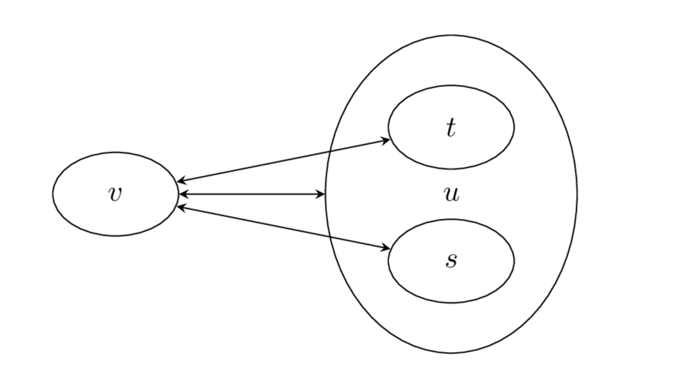
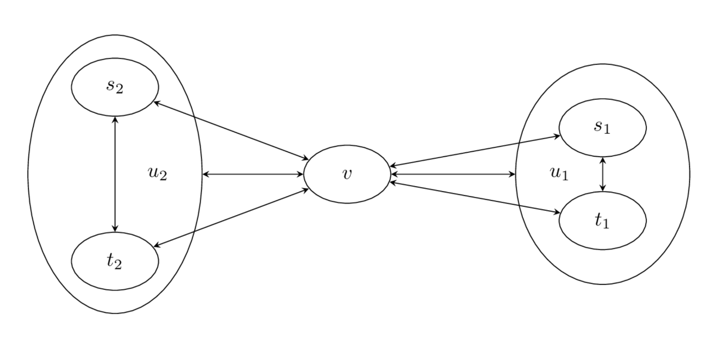

계층적 군집화 hierachical clustering
Summary
- 계층적 군집화는 여러개의 군집 중에서도 가장 유사도가 높은 혹은 가까운 군집 두개를 선택하여 하나로 합치면서 군집 개수를 줄여가는 방법이다. 군집간의 거리를 기반으로 클러스터링을 하는 알고리즘이며 K-Means와 다르게 군집의 수를 미리 정해주지 않아도 된다.
- 원리는 두 클러스터 사이의 거리를 측정해서 거리가 가까운 클러스터끼리 묶는 방식이다.
- 군집간의 거리를 측정하는 방법에는 비계층적 거리 측정법과 계층적 거리 측정법이 있다. 계층적 거리 측정법에는 중심거리, 단일거리, 완전거리, 평균거리가 있고 계층적 거리 측정법에는 중앙값거리, 가중거리, 와드거리 방법이 있다. 디폴트 값은 와드거리이다.
계층적 군집화
계층적 군집화는 여러개의 군집 중에서 가장 유사도가 높은 혹은 거리가 가까운 군집 두 개를 선택하여 하나로 합치면서 군집 개수를 줄여가는 방법을 말한다. 합치 군집화(agglomerative clustering) 라고도 한다. 가장 처음에는 모든 군집이 하나의 데이터만을 가진다. 최초에는 데이터 개수만큼 군집이 존재하지만 군집을 합치면서 최종적으로 하나의 군집만 남게 된다.
군집간의 거리 측정
우선 모든 군집 간에 거리를 측정해야 한다. 방법으로는 계층적 방법에 의존하지 않는 비계층적 방법과 이미 이전 단계에서 계층적 방법으로 군집이 합쳐진 적이 있다는 가정을 하는 계층적 방법 두 가지가 있다.
비계층적 거리 측정법
계층적 군집화가 아니더라도 모든 경우에 사용할 수 있는 거리 측정 방법이다. 중심거리, 단일거리, 완전거리, 평균거리 등이 있다. 단점은 계층적 거리 측정법에 비해 계산량이 많다.
중심(centroid) 거리
두 군집의 중심점(centroid)를 정의한 다음 두 중심점의 거리를 군집간의 거리로 정의한다.
는 군집 와 군집 사이의 거리를 뜻한다. 또한 과 는 각각 두 군집 , 의 중심점이다. 군집의 중심점은 그 클러스터에 포함된 모든 데이터의 평균을 사용한다. | | 기호는 군집의 원소의 갯수를 말한다.
단일(single) 거리
군집 의 모든 데이터 와 군집 의 모든 데이터 의 모든 조합에 대해 데이터 사이의 거리 를 측정해서 가장 작은 값을 구한다. 최소 거리(Nearest Point) 방법이라고도 한다.
완전(complete) 거리
군집 의 모든 데이터 와 군집 의 모든 데이터 의 모든 조합에 대해 데이터 사이의 거리 를 측정해서 가장 큰 값을 구한다. 최장 거리(Farthest Point) 방법이라고도 한다.
평균(average) 거리
군집 의 모든 데이터 와 군집 의 모든 데이터 의 모든 조합에 대해 데이터 사이의 거리 를 측정해서 평균을 구한다. 는 각각 두 군집의 원소의 갯수를 뜻한다.
계층적 거리 측정법
계층적 군집화에서만 사용할 수 있는 방법이다. 이전 단계에서 이미 어떤 두 개의 군집이 하나로 합쳐진 적이 있다고 가정하여 이 정보를 사용하는 측정법이다. 비계층적 거리 측정법에 비해 계산량이 적어 효율적이다.
중앙값(median) 거리
중심거리 방법의 변형이다. 군집의 중심점의 거리를 군집간의 거리라고 한다. 만약 군집 가 군집 와 군집 가 결합하여 생겼다면
군집 의 중심점은 새로 계산하지 않고 원래 군집의 중심점의 평균을 사용한다.
해당 군집의 모든 데이터를 평균하여 중심점을 구하는(중심값 거리)것 보다 계산이 빠르다.
가중(weighted) 거리
가중거리를 사용하려면 원래 어떤 두 개의 군집이 합쳐져서 하나의 군집이 만들어졌는지 알아야 한다. 만약 군집 가 군집 와 군집 가 결합하여 생겼다면 이 군집 와 다른 군집 사이의 거리는 군집 를 구성하는 원래 군집 와 사이의 두 거리의 평균을 사용한다.

와드(Ward) 거리
가중거리방법의 변형이다. 만약 군집 가 군집 와 군집 가 결합하여 생겼다면 이 군집 와 다른 군집 사이의 거리는 군집 를 구성하는 원래 군집 와 사이의 거리를 사용하는 것은 가중거리 방법과 같지만 원래의 두 군집 가 너무 가까우면 와의 거리가 더 먼것으로 인식한다.
